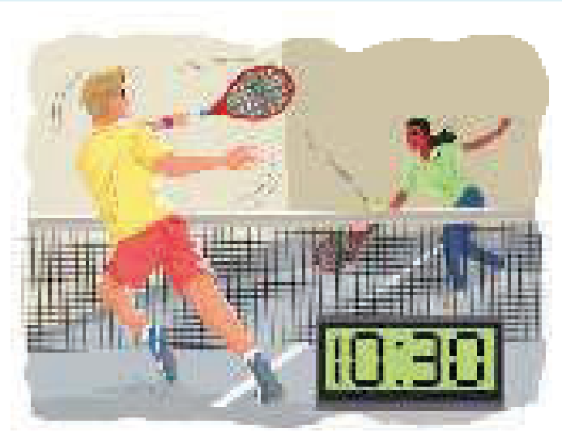
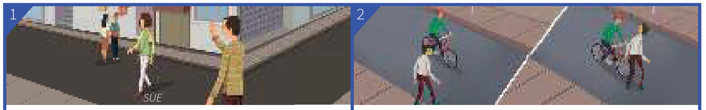

Learning Objectives
- Use was/were + -ing for an action that was in the middle of happening at a certain time in the past
- Say that something happened in the middle of something else
- Compare the past continuous (I was doing) with the past simple (I did)
- Use the past simple for one thing that happened after another
- Recognise verbs like know and want that are not normally used in continuous forms
Part A — Theory
Study this example situation

Yesterday Karen and Joe played tennis. They started at 10 o'clock and finished at 11.30.
So, at 10.30 they were playing tennis.
they were playing = they were in the middle of playing, they had not finished
was/were + -ing is the past continuous:
| Subject | Auxiliary | Verb |
|---|---|---|
| he / she / it | was | playing / doing / working etc. |
| we / you / they | were | playing / doing / working etc. |
I was doing something — in the middle of doing it
I was doing something = I was in the middle of doing it at a certain time. The action or situation started before this time, but had not finished:
past — I started doing — I was doing — I finished doing — past — now
This time last year I was living in Hong Kong.
What were you doing at 10 o'clock last night?
I waved to Helen, but she wasn't looking.
Compare I was doing and I did
Compare I was doing (past continuous) and I did (past simple):
| I was doing (= in the middle of an action) | I did (= complete action) |
| We were walking home when I met Dan. (in the middle of walking home) | We walked home after the party last night. (= all the way, completely) |
| Kate was watching TV when we arrived. | Kate watched TV a lot when she was ill last year. |
Something happened in the middle of something else
Matt phoned while we were having dinner.
It was raining when I got up.
I saw you in the park yesterday. You were sitting on the grass and reading a book.
I hurt my back while I was working in the garden.
But we use the past simple to say that one thing happened after another:
I was walking along the road when I saw Dan. So I stopped, and we talked for a while.
Compare:
| When Karen arrived, we were having dinner. (= we had already started before she arrived) | When Karen arrived, we had dinner. (= Karen arrived, and then we had dinner) |
Verbs not normally used in continuous forms
Some verbs (for example, know and want) are not normally used in continuous forms (is + -ing, was + -ing etc.). See Unit 4A for a list of these verbs.
We were good friends. We knew each other well. (not we were knowing)
I was enjoying the party, but Chris wanted to go home. (not was wanting)
Past simple (I did) ➜ Unit 5
Part B — Exercises
Complete the sentences. Choose from:
Contractions like wasn't and full forms like was not are both accepted.
- Today Helen is wearing a skirt. Yesterday she trousers.
- 'What did he say?' 'I don't know. I .'
- We at the back of the theatre. We couldn't hear very well.
- This time last year Steve on a farm.
- They didn't see me. They in my direction.
- The weather was bad. It was very cold and it .
- I saw you in your car. Where ?
- I saw Kate a few minutes ago. She for you.
Which goes with which?
Match each sentence on the left with the correct ending on the right using the dropdowns. Sentence 1 is done for you as an example.
Put the verb into the correct form, past continuous or past simple.
The strip below has two pictures printed side by side: picture 1 goes with sentence 1 and picture 2 with sentence 2. Contractions like didn't see and full forms like did not see are both accepted.

- I (see) Sue in town yesterday, but she me. She the other way.
- I home yesterday when a man out into the road in front of me. I quite fast, but luckily I to stop in time, and I him.
Put the verb into the correct form, past continuous or past simple.
Contractions like wasn't and full forms like was not are both accepted.
- Jenny (wait) for me when I (arrive).
- 'What at this time yesterday?' 'I was asleep.'
- ' out last night?' 'No, I was too tired.'
- How fast when the accident ?
- Sam a picture of me while I .
- We were in a very difficult position. We what to do, so we nothing.
- I haven't seen Alan for ages. When I last him, he to find a job.
- I along the street when suddenly I something behind me. Somebody me. I was scared and I to run.
- When I was young, I to be a pilot. Later I my mind.
- Last night I a plate when I the washing up. Fortunately it .
Answer Key
Exercise 6.1 — Complete the sentences
- Today Helen is wearing a skirt. Yesterday she was wearing trousers.
- 'What did he say?' 'I don't know. I wasn't listening / was not listening.'
- We were sitting at the back of the theatre. We couldn't hear very well.
- This time last year Steve was working on a farm.
- They didn't see me. They weren't looking / were not looking in my direction.
- The weather was bad. It was very cold and it was snowing.
- I saw you in your car. Where were you going?
- I saw Kate a few minutes ago. She was looking for you.
Exercise 6.2 — Which goes with which?
- When I got to the cafe — f my friends were waiting for me.
- We fell asleep — e while we were watching a film.
- Amy learnt Italian — a when she was living in Rome.
- Tom didn't come out with us — g because he wasn't feeling well.
- The car began to make a strange noise — c when I was driving home.
- The TV was on — d but nobody was watching it.
- When I first met Jessica — b she was working in a clothes shop.
Exercise 6.3 — Sue and the cyclist
- I saw Sue in town yesterday, but she didn't see / did not see me. She was looking the other way.
- I was cycling home yesterday when a man stepped out into the road in front of me. I was going quite fast, but luckily I managed to stop in time, and I didn't hit / did not hit him.
Exercise 6.4 — Past continuous or past simple
- Jenny was waiting for me when I arrived.
- 'What were you doing at this time yesterday?' 'I was asleep.'
- 'Did you go out last night?' 'No, I was too tired.'
- How fast were you driving when the accident happened?
- Sam took a picture of me while I wasn't looking / was not looking.
- We were in a very difficult position. We didn't know / did not know what to do, so we did nothing.
- I haven't seen Alan for ages. When I last saw him, he was trying to find a job.
- I was walking along the street when suddenly I heard something behind me. Somebody was following me. I was scared and I started to run.
- When I was young, I wanted to be a pilot. Later I changed my mind.
- Last night I dropped a plate when I was doing the washing up. Fortunately it didn't break / did not break.
Summary
| Use | Example |
|---|---|
| The past continuous form | he/she/it was playing; we/you/they were playing. |
| In the middle of an action at a certain time in the past | This time last year I was living in Hong Kong. |
| An action in progress interrupted by another action | Matt phoned while we were having dinner. |
| Already started before something else happened | When Karen arrived, we were having dinner. |
| One thing after another (past simple) | I stopped, and we talked for a while. |
| Verbs not used in continuous forms | We knew each other well. (not we were knowing) |